International Diversification: Optimizing Sharpe Ratios with Monte Carlo & Hurdle Filtering
The problem
Given the U.S. market’s historically superior risk-adjusted returns, do U.S. investors actually still benefit from international diversification, or does adding other markets just dilute an already-efficient portfolio? Using MSCI indices for nine major equity markets as proxies, the goal was to test whether a deliberately-constructed optimal portfolio could beat a U.S.-only allocation on a risk-adjusted basis — and if so, identify exactly which non-U.S. markets were actually worth holding.
Approach
Data. Monthly MSCI price and dividend-yield data (1995-2024) for nine markets, adjusted for FX effects against the U.S. dollar to produce USD-denominated total returns — clean monthly series per market, with index inception gaps and misaligned dates corrected.
Baseline: uniform Monte Carlo. An initial 100,000-portfolio simulation using uniform random weight sampling — the standard Monte Carlo approach — found that MSCI USA’s own Sharpe ratio (0.717) slightly beat the best uniformly-sampled diversified portfolio (0.715). That result motivated everything that follows: it suggested the true optimum wasn’t a broadly diversified portfolio, but something more concentrated that uniform sampling was structurally unlikely to find.
Why Dirichlet sampling. Uniform random sampling (weights drawn uniformly, then normalized) clusters candidate portfolios near equal weights — in a universe dominated by one strong performer (MSCI USA), that systematically underrepresents the concentrated, high-Sharpe allocations that are actually optimal. Dirichlet sampling with a low concentration parameter (α = 0.5) explores the corners of the weight simplex directly, surfacing concentrated candidates uniform sampling would rarely propose.
Hurdle-rate filter. Even with Dirichlet sampling, diversification benefits stayed modest — some markets were diluting portfolio efficiency rather than improving it. The fix: test each market against a hurdle rate derived from MSCI USA’s own risk-adjusted performance before it’s allowed into the optimization at all —
\[\text{Hurdle}_i = \text{Sharpe}_{\text{USA}} \times \text{Corr}(i, \text{USA}) \times \text{Volatility}_i\]
— the minimum expected return a market must clear to justify inclusion, given its correlation to the U.S. and its own volatility. Markets whose expected return falls below their hurdle are excluded before the final Dirichlet optimization runs.
Period-specific analysis. The full pipeline (baseline → Dirichlet → hurdle-filtered Dirichlet) was run on three windows — the full 1995-2024 sample, a historical 1995-1999 slice (a period of strong U.S. outperformance), and a recent 2020-2024 slice — to test whether diversification’s value is time-dependent.
Key findings
- Selective diversification beat U.S.-only, but the size of the edge depended entirely on how efficient the U.S. already was in that window. Full period: filtered Sharpe ratio 0.754 vs. 0.717 for MSCI USA alone — a 5.1% improvement. In 2020-2024, the edge widened to 12.1% (0.734 vs. 0.655). In 1995-1999, it shrank to ~2% — the U.S. so thoroughly outperformed every peer that even an optimized global portfolio had little room to add value.
- The U.S. stayed the core holding in every period, but its exact weight moved with how good the alternatives were. Full-period filtered allocations ran 62-68% USA; in 1995-1999 (weak alternatives) it climbed to 76-84%; in 2020-2024 (stronger alternatives) it eased to 67-75%. The answer to the original question is specific: diversification here means adding a handful of high-Sharpe, imperfectly-correlated markets to a U.S. anchor, not replacing U.S. exposure with a broad basket.
- Correlations with the U.S. rose across the board, but the performance gap narrowed enough to more than offset it. Rising correlations should mechanically shrink diversification value — but many non-U.S. markets closed the risk-adjusted performance gap with the U.S. over the same period (post-crisis macro stabilization, deeper capital markets, growth in higher-value sectors outside the U.S.). Net effect: more markets cleared the hurdle filter in 2020-2024 than in the 1990s, despite higher correlations across the board.
- The specific diversifier that mattered changed by period, each for a different structural reason — Turkey in 2020-2024 (high risk premia from currency/inflation instability, but genuinely low correlation to the U.S. cycle), Switzerland across the full period (defensive sector exposure — pharma, staples, financials — as a counterweight to a growth-heavy U.S. market), and the UK in 1995-1999 (energy/financials-heavy at exactly the moment U.S. equities were being driven by the dot-com tech surge).
- Dirichlet sampling never underperformed uniform sampling, and the margin wasn’t trivial. Across every period and risk-free assumption tested, the Dirichlet-derived optimal portfolio matched or beat its uniform-sampling counterpart on Sharpe ratio — evidence the concentrated allocations it finds are genuinely more efficient, not just different.
- Raising the assumed risk-free rate concentrated portfolios further into the U.S. At a 4% risk-free rate (vs. 0%), optimal allocations tilted more heavily toward the U.S. and other high-return markets — a higher hurdle for excess return makes lower-return diversifiers harder to justify, so the optimizer leans further into the market with the strongest and most liquid nominal returns.
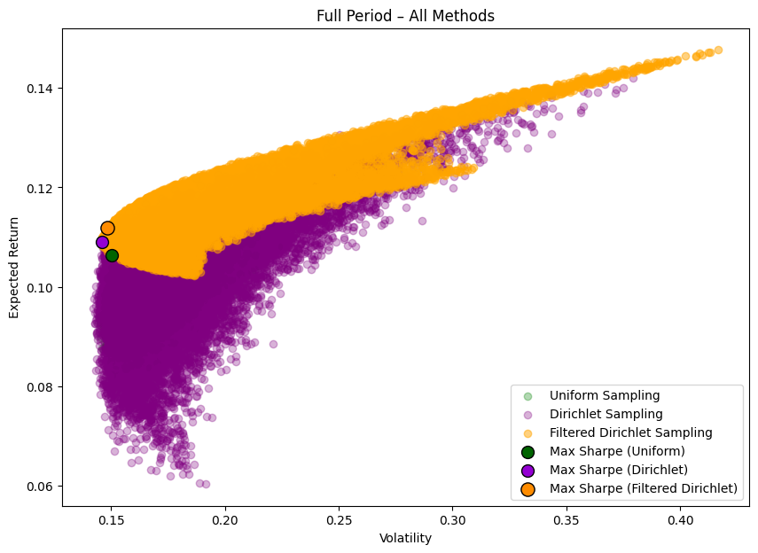
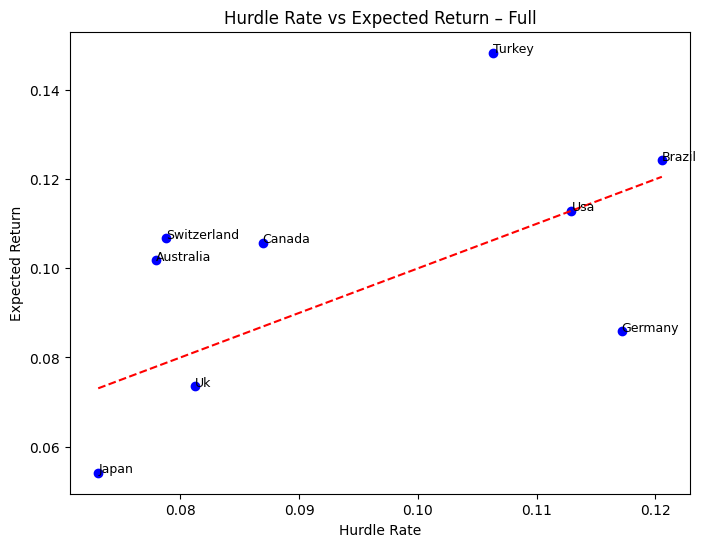
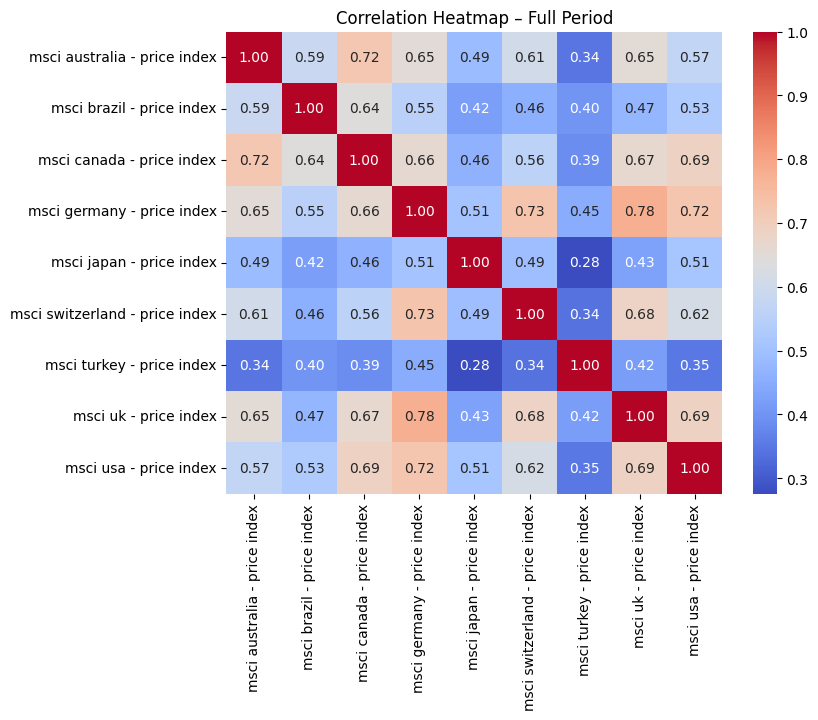
Full report
Notion doesn’t allow its pages to be embedded (it blocks third-party iframes outright) and the export tooling wasn’t cooperating, so the complete report is reproduced directly below rather than linked out — everything past this point is the full original write-up, not a summary.
Portfolio optimization method comparison
Uniform vs. Dirichlet vs. hurdle-filtered Dirichlet, benchmarked against MSCI USA, both risk-free assumptions. The filtered Dirichlet approach comes out ahead of every alternative in every period tested.
Full period
| Portfolio | Sharpe (RF=0%) | Return (RF=0%) | Vol (RF=0%) | Sharpe (RF=4%) | Return (RF=4%) | Vol (RF=4%) |
|---|---|---|---|---|---|---|
| MSCI USA | 0.7174 | 0.1129 | 0.1574 | 0.4633 | 0.1129 | 0.1574 |
| Uniform MC | 0.7076 | 0.1064 | 0.1504 | 0.4416 | 0.1064 | 0.1504 |
| Dirichlet MC | 0.7465 | 0.1091 | 0.1461 | 0.4780 | 0.1140 | 0.1549 |
| Filtered Dirichlet | 0.7540 | 0.1118 | 0.1483 | 0.4847 | 0.1135 | 0.1516 |
1995-1999
| Portfolio | Sharpe (RF=0%) | Return (RF=0%) | Vol (RF=0%) | Sharpe (RF=4%) | Return (RF=4%) | Vol (RF=4%) |
|---|---|---|---|---|---|---|
| MSCI USA | 1.9464 | 0.2724 | 0.1399 | 1.6606 | 0.2724 | 0.1399 |
| Uniform MC | 1.6186 | 0.2367 | 0.1462 | 1.3451 | 0.2367 | 0.1462 |
| Dirichlet MC | 1.9540 | 0.2650 | 0.1356 | 1.6590 | 0.2650 | 0.1356 |
| Filtered Dirichlet | 1.9912 | 0.2605 | 0.1308 | 1.6907 | 0.2699 | 0.1360 |
2020-2024
| Portfolio | Sharpe (RF=0%) | Return (RF=0%) | Vol (RF=0%) | Sharpe (RF=4%) | Return (RF=4%) | Vol (RF=4%) |
|---|---|---|---|---|---|---|
| MSCI USA | 0.6546 | 0.1361 | 0.2080 | 0.4623 | 0.1361 | 0.2080 |
| Uniform MC | 0.6841 | 0.1160 | 0.1696 | 0.4537 | 0.1191 | 0.1743 |
| Dirichlet MC | 0.7245 | 0.1332 | 0.1839 | 0.5071 | 0.1336 | 0.1847 |
| Filtered Dirichlet | 0.7341 | 0.1349 | 0.1837 | 0.5205 | 0.1379 | 0.1881 |
Correlations between markets
Correlations with the U.S. rose across almost every market over time — normally a headwind for diversification value. What offset it: many non-U.S. markets closed the risk-adjusted performance gap with the U.S. over the same period, so more markets cleared the hurdle filter in 2020-2024 than in the 1990s despite the higher correlations.
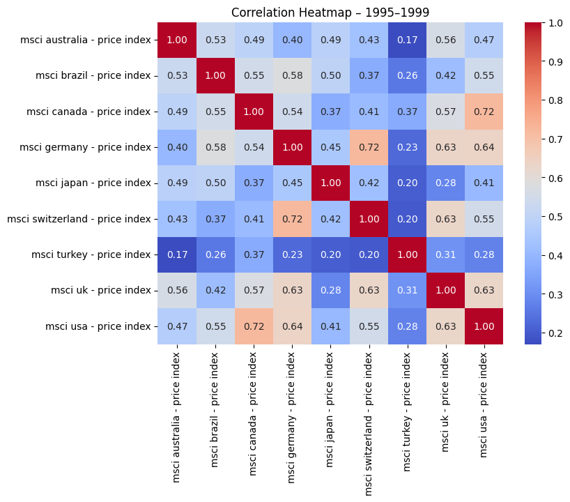
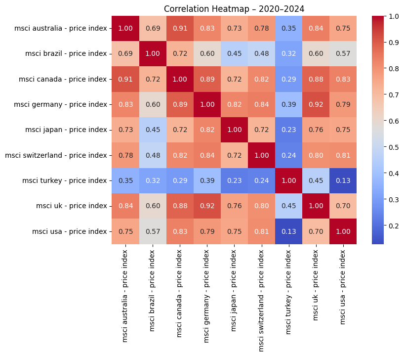
Hurdle-rate filtering
Each market’s expected return plotted against its own hurdle rate — only markets above the diagonal clear the bar and enter the filtered optimization. The margin by which a market clears its hurdle tracks closely with how much weight it ends up receiving: Turkey clears by a wide margin in 2020-2024 and picks up a ~23% allocation; markets that barely clear (or miss entirely) get minimal or zero weight.
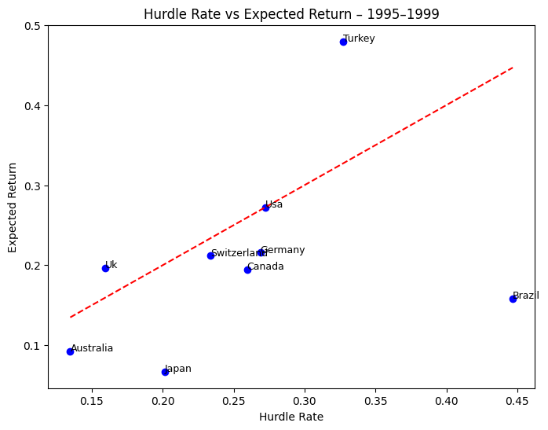
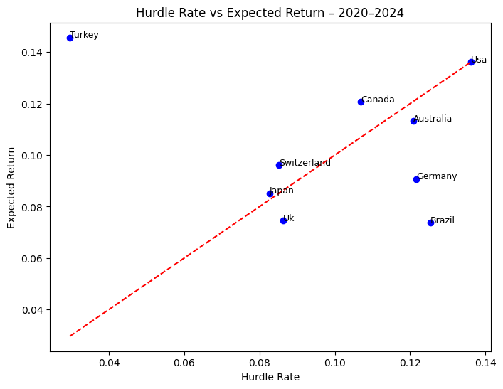
Optimized portfolio composition (filtered Dirichlet)
Full period
| Index | Weight (RF=0%) | Weight (RF=4%) |
|---|---|---|
| MSCI USA | 62.02% | 67.89% |
| MSCI Switzerland | 23.08% | 22.49% |
| MSCI Canada | 9.76% | 1.20% |
| MSCI Turkey | 3.32% | 6.23% |
| MSCI Australia | 1.81% | 2.12% |
| MSCI Brazil | ~0.00% | 0.06% |
1995-1999
| Index | Weight (RF=0%) | Weight (RF=4%) |
|---|---|---|
| MSCI USA | 76.05% | 83.79% |
| MSCI UK | 21.76% | 12.76% |
| MSCI Turkey | 2.19% | 3.44% |
2020-2024
| Index | Weight (RF=0%) | Weight (RF=4%) |
|---|---|---|
| MSCI USA | 66.66% | 75.24% |
| MSCI Turkey | 23.37% | 23.37% |
| MSCI Switzerland | 7.87% | 0.31% |
| MSCI Canada | 2.03% | 0.67% |
| MSCI Japan | 0.06% | 0.40% |
Efficient frontier by period
The frontier’s shape tells its own story about how much diversification opportunity existed in each window. 1995-1999 is shallow and tightly clustered — U.S. dominance was so complete that adding other markets mostly just added volatility without proportional return. 2020-2024 is steeper and more extended, reflecting a genuinely wider dispersion of risk-return trade-offs and a real incentive to diversify.
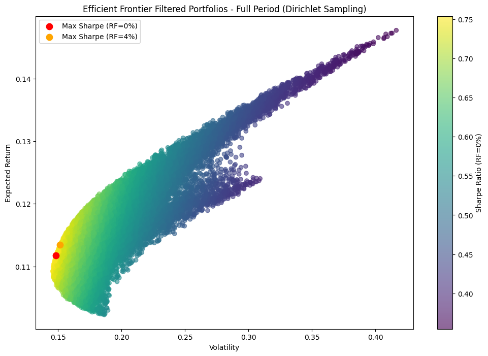
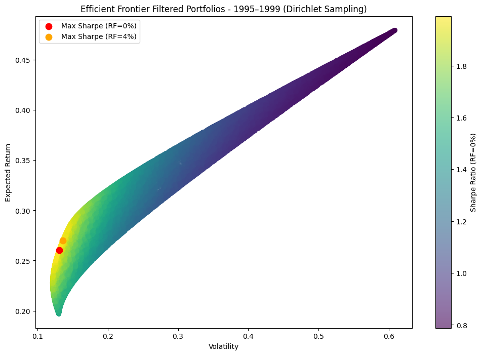
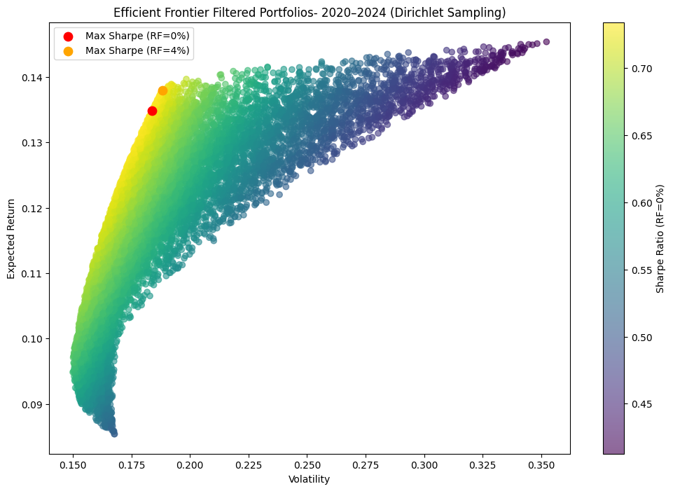
Sampling & filtering comparison
Overlaying all three approaches: Dirichlet sampling’s frontier consistently envelopes uniform sampling’s, showing it explores the concentrated, high-Sharpe edge cases uniform sampling underrepresents (uniform sampling could theoretically reach similar allocations, but would need millions of draws to do it, most producing near-zero weights on most assets rather than the more meaningful allocations Dirichlet finds directly). Hurdle-filtering then shifts the feasible set again, toward portfolios built only from markets that earn their place.
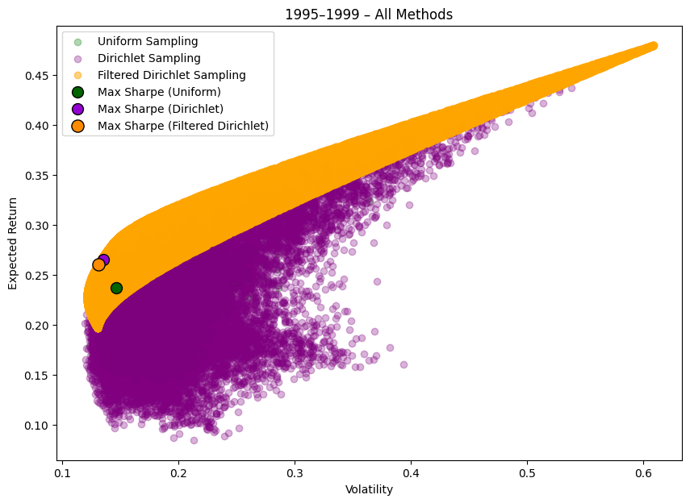
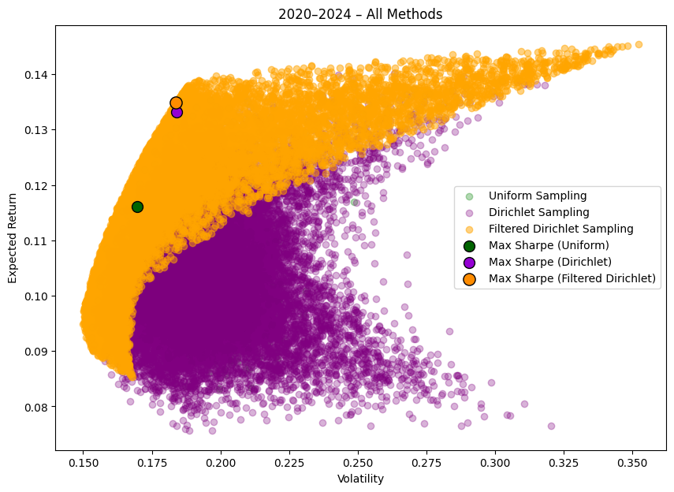
Index-level statistics
Bold = cleared the hurdle rate and was retained in that period’s filtered universe.
Full period
| Index | Exp. Return | Volatility | Corr. w/ USA | Hurdle Rate |
|---|---|---|---|---|
| MSCI Australia | 0.1019 | 0.1896 | 0.5727 | 0.0779 |
| MSCI Brazil | 0.1242 | 0.3180 | 0.5283 | 0.1205 |
| MSCI Canada | 0.1057 | 0.1754 | 0.6907 | 0.0869 |
| MSCI Germany | 0.0859 | 0.2258 | 0.7234 | 0.1172 |
| MSCI Japan | 0.0541 | 0.1990 | 0.5119 | 0.0731 |
| MSCI Switzerland | 0.1068 | 0.1782 | 0.6163 | 0.0788 |
| MSCI Turkey | 0.1484 | 0.4227 | 0.3505 | 0.1063 |
| MSCI UK | 0.0735 | 0.1646 | 0.6882 | 0.0813 |
| MSCI USA | 0.1129 | 0.1574 | 1.0000 | 0.1129 |
1995-1999
| Index | Exp. Return | Volatility | Corr. w/ USA | Hurdle Rate |
|---|---|---|---|---|
| MSCI Australia | 0.0927 | 0.1464 | 0.4729 | 0.1348 |
| MSCI Brazil | 0.1583 | 0.4209 | 0.5455 | 0.4468 |
| MSCI Canada | 0.1947 | 0.1853 | 0.7192 | 0.2594 |
| MSCI Germany | 0.2158 | 0.2175 | 0.6353 | 0.2689 |
| MSCI Japan | 0.0670 | 0.2552 | 0.4055 | 0.2014 |
| MSCI Switzerland | 0.2121 | 0.2184 | 0.5493 | 0.2335 |
| MSCI Turkey | 0.4796 | 0.6088 | 0.2759 | 0.3270 |
| MSCI UK | 0.1969 | 0.1303 | 0.6277 | 0.1592 |
| MSCI USA | 0.2724 | 0.1399 | 1.0000 | 0.2724 |
2020-2024
| Index | Exp. Return | Volatility | Corr. w/ USA | Hurdle Rate |
|---|---|---|---|---|
| MSCI Australia | 0.1132 | 0.2445 | 0.7546 | 0.1208 |
| MSCI Brazil | 0.0737 | 0.3375 | 0.5675 | 0.1254 |
| MSCI Canada | 0.1206 | 0.1964 | 0.8315 | 0.1069 |
| MSCI Germany | 0.0907 | 0.2366 | 0.7852 | 0.1216 |
| MSCI Japan | 0.0852 | 0.1680 | 0.7516 | 0.0826 |
| MSCI Switzerland | 0.0961 | 0.1613 | 0.8071 | 0.0852 |
| MSCI Turkey | 0.1457 | 0.3541 | 0.1279 | 0.0297 |
| MSCI UK | 0.0746 | 0.1885 | 0.6996 | 0.0863 |
| MSCI USA | 0.1361 | 0.2080 | 1.0000 | 0.1361 |
Practical takeaway
U.S. investors can meaningfully improve portfolio efficiency by selectively diversifying into a small set of high-Sharpe, low-correlation international markets — Turkey, Switzerland, and Canada were the standouts here, not a broad international basket. Guided by a hurdle-rate framework, these targeted allocations delivered 5-12% Sharpe improvements over a U.S.-only portfolio, and that edge has grown in recent years as global peers close the performance gap with the U.S.
Code
The core Monte Carlo loop — uniform vs. Dirichlet sampling of portfolio weights, evaluated across thousands of draws:
def run_portfolio_simulation(returns_df, risk_free_rate=0.04, num_ports=20000,
seed=42, sampling="uniform", alpha=1):
np.random.seed(seed)
num_assets = returns_df.shape[1]
all_weights = np.zeros((num_ports, num_assets))
ret_arr = np.zeros(num_ports)
vol_arr = np.zeros(num_ports)
sharpe_arr_0 = np.zeros(num_ports)
for x in range(num_ports):
if sampling == "dirichlet":
# Concentration parameter alpha < 1 pushes draws toward the
# corners of the simplex -- exactly the concentrated allocations
# uniform sampling under-explores.
weights = np.random.dirichlet(np.ones(num_assets) * alpha)
else:
weights = np.random.random(num_assets)
weights /= np.sum(weights)
all_weights[x, :] = weights
ret_arr[x] = np.sum(returns_df.mean() * weights) * 12
vol_arr[x] = np.sqrt(np.dot(weights.T, np.dot(returns_df.cov() * 12, weights)))
sharpe_arr_0[x] = ret_arr[x] / vol_arr[x]
max_sr_idx = np.argmax(sharpe_arr_0)
return {
'weights_0': all_weights[max_sr_idx],
'sharpe_0': sharpe_arr_0[max_sr_idx],
'ret_0': ret_arr[max_sr_idx],
'vol_0': vol_arr[max_sr_idx],
}The hurdle-rate filter — excluding markets that don’t clear a correlation-and-volatility-adjusted bar before re-optimizing:
def compute_index_stats(df, index_name='msci usa - price index'):
annualized_return = df.mean() * 12
annualized_volatility = df.std() * np.sqrt(12)
correlation_with_usa = df.corr()[index_name]
index_sharpe_ratio = annualized_return / annualized_volatility
# Hurdle_i = Sharpe_USA * Corr(i, USA) * Volatility_i
hurdle_rate = correlation_with_usa * index_sharpe_ratio[index_name] * annualized_volatility
return pd.DataFrame({
'Expected Return': annualized_return,
'Correlation with MSCI USA': correlation_with_usa,
'Hurdle rate': hurdle_rate,
})
def filter_by_hurdle(df, stats_df, period_label):
expected_col = f"Expected Return ({period_label})"
hurdle_col = f"Hurdle rate ({period_label})"
selected_assets = stats_df[stats_df[expected_col] >= stats_df[hurdle_col]].index
return df[selected_assets], stats_df.loc[selected_assets]